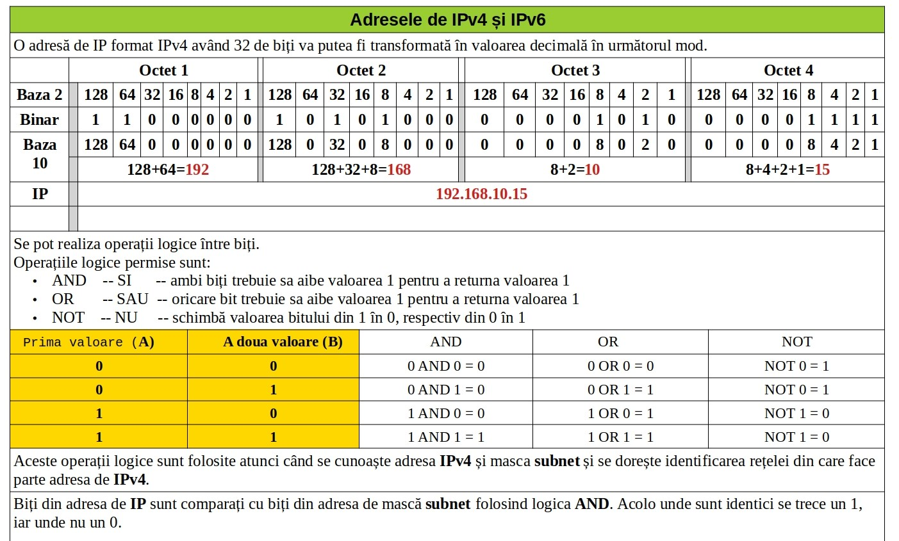
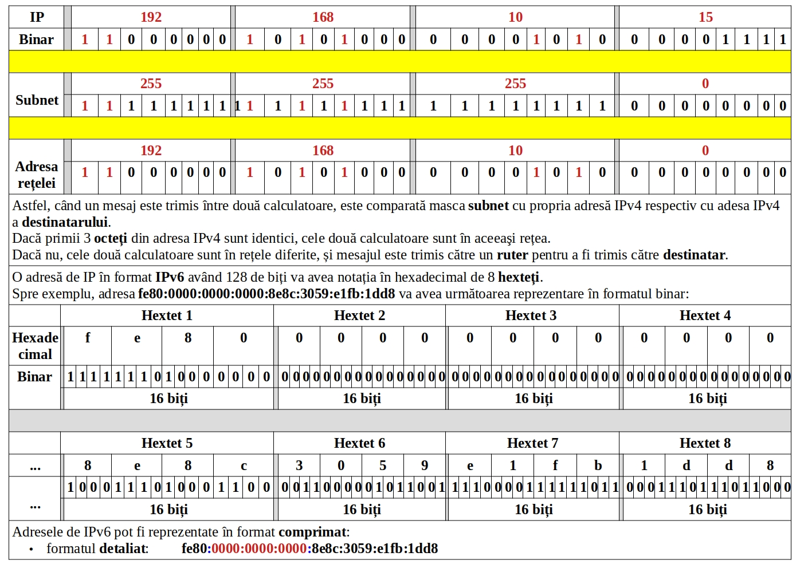
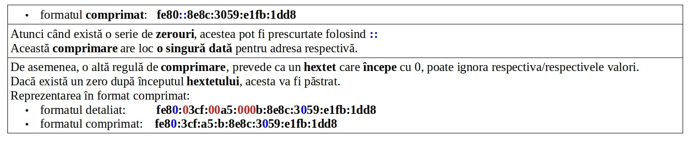

Adresele de IPv4 şi IPv6
Închide meniu
Acasă
IoT ∵
Internetul obiectelor
Concepte cheie
Diagrame algoritmi
Big data
Procesare şi stocare în cloud
Automatizare
Siguranța datelor
Cabluri de rețea
Rețele de comunicare mobile
Spectrul electromagnetic
Protocoale de comunicație
Switch şi Ruter
Comenzi configurare rețea
Server
Protocolul de internet (IP)
Adresarea dinamică de IP (DHCP)
Sistemul decimal şi binar
Considerente de securitate
Adresele de IPv4 şi IPv6
URI, URL, URN
Porturile calculatorului
☰
❮
❯
VRU
⟢ Adresele de IPv4 şi IPv6
